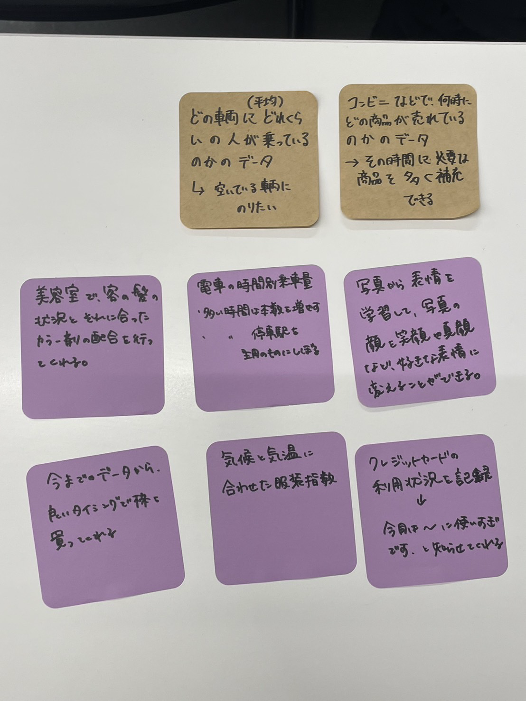

デザイン演習 第3回
IoTによるデータ保存
~IoT(データ保存)で何ができそうか？~

~どういった価値になるか~
電車の乗車率
電車の時間帯ごとの乗車率や号車ごとの乗車率のデータを利用し、できるだけ空いているところを案内してくれる
コンビニなどのものが売れたデータ
特定の商品がどのタイミングでどれくらい売れたかのデータで、商品が無駄にならない効率の良いタイミングで仕入れを行ってくれる
美容室のデータ
お客さんの髪質と、それに合ったカラー材の配合のデータを利用して、自動でカラー材を配合してくれる